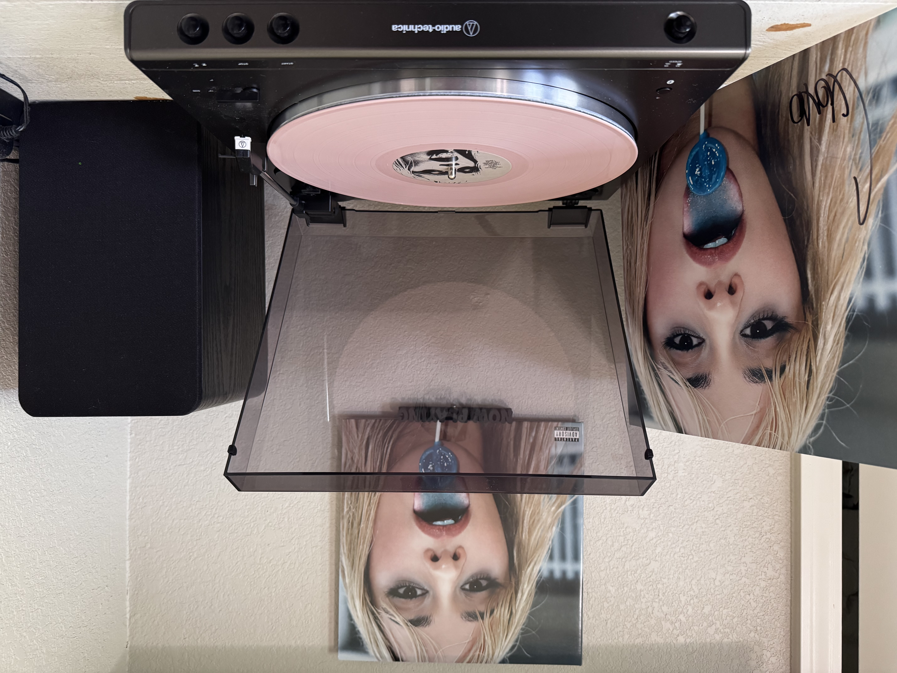

This is one of my favorite vinyls I own because it was the first signed vinyl I ever bought. I still remember opening the package and playing it the same day it arrived — it felt special in a way only a first signed record can.
This era of Camila’s music means a lot to me because she was experimenting so much, pushing her sound in new directions, and I loved watching her take those risks. The Magic City Edition is incredible too — I don’t own it (sad), but “babypink” is my favorite song from that version. I wish Drake wasn’t part of the album, but whatever… I love Camila always.
She reminds me of myself in different ways — her humor, her quirkiness, the way she doesn’t take herself too seriously. One difference though: she loves shaking her butt, and I definitely don’t.
From the standard version, my favorites are “pretty when i cry” and “Chanel No. 5.” I relate to both of them a lot, and that’s why I chose “Chanel No. 5” for y’all to listen to.
My favorite Camila song right now though? “psychofreak.” Absolutely worth a listen.

This is one of the albums that defined my 2025. I got it for Christmas last year, and it ended up tying for first place as my favorite album of the year — right alongside “Wishbone” by Conan Gray. There isn’t a single song on “Ruby” that I don’t love. A couple tracks didn’t hit me on the first listen (like “ZEN”), but after a month I was obsessed. “like JENNIE” is iconic, and I still remember getting butterflies the first time I heard “Love Hangover” and “Handlebars.” The collabs on this album are amazing — every feature feels intentional and elevates the whole project.
This album, along with “rosie” by Rosé, is what truly introduced me to K‑pop. I can never go back. Don’t worry, I love “Alter Ego” and “AMORTAGE” too, but I didn’t listen to those until after I got into Blackpink because of Rosé. “rosie” would absolutely be on this list if I owned it (sadface).
Back to JENNIE — my favorite songs of hers are “twin” and “start a war,” but “twin” hits especially hard. I have a twin, and even though JENNIE’s “twin” was her best friend, I understand that feeling of separation. My sister and I struggle to communicate, even though we see each other almost every day because we live together. Sometimes it feels like in a few years we might drift apart, the same way JENNIE has with her own “twin.” That song makes me feel seen in a way I didn’t expect.
And honestly, I find JENNIE really inspiring. She seems kind, cool, and genuinely funny. Y’all should watch her Chicken Shop Date with Amelia Dimoldenberg — it’s hilarious. Also, capybaras are top‑tier cute. You cannot disagree with her on that.
This is one of the albums that defined my 2025. I got it for Christmas last year, and it ended up tying for first place as my favorite album of the year — right alongside “Wishbone” by Conan Gray. There isn’t a single song on “Ruby” that I don’t love. A couple tracks didn’t hit me on the first listen (like “ZEN”), but after a month I was obsessed. “JENNIE” is iconic, and I still remember getting butterflies the first time I heard “Love Hangover” and “Handlebars.” The collabs on this album are amazing — every feature feels intentional and elevates the whole project.This album, along with “rosie” by Rosé, is what truly introduced me to K‑pop. I can never go back. Don’t worry, I love “Alter Ego” and “AMORTAGE” too, but I didn’t listen to those until after I got into Blackpink because of Rosé. “rosie” would absolutely be on this list if I owned it (sadface).
Back to JENNIE — my favorite songs of hers are “twin” and “start a war,” but “twin” hits especially hard. I have a twin, and even though JENNIE’s “twin” was her best friend, I understand that feeling of separation. My sister and I struggle to communicate, even though we see each other almost every day because we live together. Sometimes it feels like in a few years we might drift apart, the same way JENNIE has with her own “twin.” That song makes me feel seen in a way I didn’t expect.
And honestly, I find JENNIE really inspiring. She seems kind, cool, and genuinely funny. Y’all should watch her Chicken Shop Date with Amelia Dimoldenberg — it’s hilarious. Also, capybaras are top‑tier cute. You cannot disagree with her on that.

My favorite song from this album is “Nauseous.” It truly makes me nauseous because I relate way too much to it. Honestly, I relate too much to most Conan Gray music, which is probably alarming for my mental health, but I really do enjoy being a conehead. I’m proud of it. I’ve been a fan of him since the “Crush Culture” days.
He’s great at what he does, and his vocals improved so much on this album. They were good before, but I can definitely recognize the growth. I went to the “Wishbone” tour a couple months ago and it was so much fun — the set was adorable. It was my second time seeing him live, since I went to “Found Heaven” at the same venue about a year and a half earlier. “Found Heaven” is a great album that I also own on vinyl, but I love this album so much too, maybe even more.
The imagery and storytelling on this album are incredible, and my vinyl is also signed. The thought he put into the vinyl packaging really shows how much he cares about his fans — the coneheads. His music has helped me understand myself better, especially when it comes to my family. He is so strong and resilient and honestly deserves the world. I love him so much.
I chose “This Song” for the music video to show because I knew this album was going to be a hit when this single came out. It was the first one, and I listened to it nonstop for two months straight. I still listen to these songs daily. It is so good.

“Chaos Angel” by Maya Hawke is one of those albums that makes me feel understood in a way that’s almost uncomfortable — in the best way. Maya’s voice is gentle but emotional, and the production feels like walking through a dream you’re not sure you want to wake up from. Her writing is soft, strange, and honest, and the imagery lingers long after the song ends. It’s the kind of album that makes you sit with your feelings instead of running from them, and all of her music has that calming, grounding effect on me.
Maya has become one of my comfort artists because of this album. She’s quirky, thoughtful, and effortlessly herself. “Chaos Angel” feels like a warm hug from someone who understands what it’s like to be a little lost but still trying. It’s a quiet album, but it hits loud.
I bought the signed vinyl for myself when it was on preorder for my birthday. I was turning 20, and my dad was shipping me off to study abroad just days later. My birthday is May 27, the album came out May 31, and I think I ordered it in March. It arrived early at my grandparents’ house, so I got to see the package before leaving for Italy — alone, and very much against my will. I never opened it, but I listened to the album constantly during my four-and-a-half-week trip. I didn’t enjoy myself as much as people assume; girls can be mean. But this album got me through. Knowing I had something special waiting for me at home, and replaying these songs over and over, kept me calm.
Maya’s music has helped me through some of the hardest moments of my life. “Blush” and “Moss” carried me after my mom passed, especially when I was questioning everything about myself — my purpose, my identity, all of it. “Missing Out,” the song I chose to show, is hilarious and painfully true. It’s about how the world perceives Maya, and it helped me realize that it doesn’t matter what people think as long as you’re doing what makes you happy. Keep going.
My favorite song on the album is probably “Wrong Again” — it always makes me smile. “Okay” hits too close to home, especially with the codependency I’m trying to grow out of while people around me keep pulling me back into their grasp. And the final track, “Chaos Angel,” captures her journey of embracing chaos as a catalyst for change and love. I relate to that deeply. If anything, I am definitely chaos pretending to have it all together because the people around me need me to be stable.
For anyone wanting to get into Maya Hawke’s music, I always recommend “Sweet Tooth,” “Luna Moth,” “To Love a Boy,” “Mermaid Bar,” and “Dark.”

This is my second-favorite Taylor album. I don’t own my first favorite — "Taylor Swift" — but "evermore" has such a special place in my heart anyway. It feels like winter in album form: soft, sad, cozy, and honest in a way only Taylor can pull off. This album also introduced me to HAIM, who I now love so much. Their collaboration on “no body, no crime” was my gateway, and I’ve been obsessed ever since.
My favorite song from the album is “coney island” featuring The National. There’s something about the way she sings about disappointment and distance that hits a little too close to home. I also love “ivy” and “’tis the damn season” — both of them feel like stories I’ve lived before. And “tolerate it” hits in a way I wish it didn’t. Watching my dad act like that growing up made the song feel painfully familiar. “gold rush” is another one I resonate with — that mix of longing and insecurity wrapped in something beautiful.
The whole album has that vibe: reflective, quiet, and full of stories that feel like they belong in a book. It’s one of those albums that grows with you, and every time I listen, I find something new to hold onto.
I chose “willow” as the song to show because it captures the exact feeling of "evermore" — soft, magical, and a little haunting in the best way. It feels like following a golden thread through all the versions of yourself you’ve been. The production is warm and witchy, and the lyrics feel like surrendering to something you’ve been resisting for a long time. It’s gentle but powerful, and it represents the album’s whole world so well. “willow” was also the first song I ever heard from evermore, so it feels like the doorway into everything I love about this album.

This is the first album I ever listened to for the very first time on vinyl, and honestly, it was immaculate. Hearing it that way — the crackle, the warmth, the way each song transitioned seamlessly into the next — made the whole experience feel intentional, like Billie designed the album to be heard exactly like that. It felt like stepping into her world for the first time. I also got to see the HIT ME HARD AND SOFT tour with my sister, which was so fun and made the album feel even more special to me.
I chose “THE GREATEST” as the song to show because it captures everything this album does so well: the emotional build, the honesty, the exhaustion, and the way Billie can make something heartbreaking sound beautiful. It’s one of those songs that hits harder the more you think about it.
For a long time, my favorite song was “BIRDS OF A FEATHER.” It helped me love my sister even when she was hard to love. There’s something about the way Billie sings about wanting someone to stay — even when it’s complicated — that made me see my sister with more softness. But now my favorites are probably “L’AMOUR DE MA VIE” and “BLUE.” “L’AMOUR DE MA VIE” feels like letting go of something you once held too tightly, and “BLUE” ties the whole album together in a way that feels like closure and unraveling at the same time.
My favorite Billie song used to be “everything i wanted,” but I can’t listen to it the same way anymore. The person who was the “you say” to me was my mom, and now the song feels different — heavier, too close. These days, the Billie song I connect with most is “Not My Responsibility.” It reminds me that I don’t owe the world explanations for who I am or how I look or what I feel. It’s grounding in a way I really need sometimes. It’s a reminder that I’m allowed to take up space without apologizing for it.